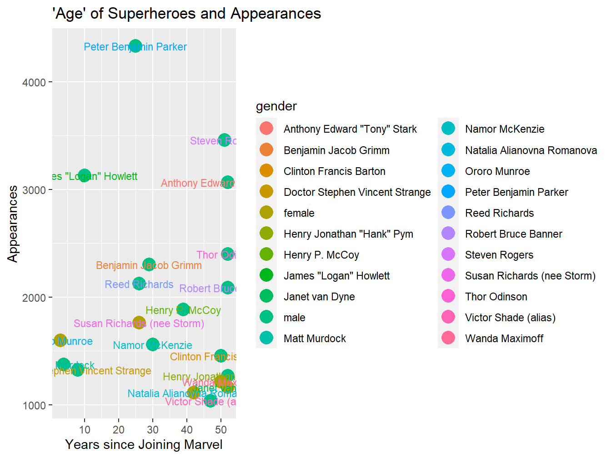

Chapter 2 Basic Concepts of ggplot
A visualization can be anything. It can be a drawing, a photograph, a sculpture, a well-decorated cake… you get the idea. However, data scientists and statisticians are often not very skilled at all of these art forms, so they are limited to their tools at hand: functions, code, and geometries.
This leads us to data visualizations. What separates a data visualization from a drawing is the tools used to construct it. In this guide, our blank canvas is a function called ggplot.
library(tidyverse)
ggplot()Figure 2.1: An empty plot
2.1 Geometries and Aesthetic Mappings
Everytime that we want to visualize something, we must use this function. The stuff that fills up this space are called geometries. Here are just a few that ggplot has avaiable to us.
geom_rectproduces rectangles.geom_pointcreates dots.geom_linedraws lines.geom_barmakes a barplot.geom_functionuses functions to draw a continuous curve.
If the geometries are the shapes on our ggplot canvas, how do we put them on there? This is where aesthetics and mapping come in. When we call the function ggplot we need to connect our data to aesthetic mappings which are then applied to various geometries.
But where do we use aesthetics mappings? The mapping argument in the ggplot and geom functions are what connect variables from our dataset. Lets look at a dataset of Marvel superheroes and apply the following aesthetics:
Years since joining Marvel → x
Appearances → y
Gender → color
Now we will use the aes function to define our mappings for a simple scatterplot. We will also use the labs function to label our axes and title and an additional size argument to make our points larger.
ggplot(data = avengers, mapping = aes(x = years_since_joining,
y = appearances,
color = gender)) +
geom_point(size = 5) +
labs(title = "'Age' of Superheroes and Appearances",
x = "Years since Joining Marvel",
y = "Appearances")Figure 2.2: Basic Avengers scatterplot
We used two arguments in the gpplot function: data and mapping. Next, we added the geometry geom_point using a plus sign (+). The aesthetic mapping in the ggplot function are then passed onto geom_point.
Even though we must include data and mappings to produce a visualization, we do not always have to name the arguments themselves. For instance, we could simply write:
ggplot(avengers, aes(x = years_since_joining,
y = appearances,
color = gender)) +
geom_point()Aesthetic mappings can also produce different geometries by simply changing the function. For example, instead of using geom_point we can use geom_rect to draw rectangles or squares.
ggplot(avengers, aes(x = years_since_joining,
y = appearances,
fill = gender)) +
geom_rect(aes(xmin = years_since_joining - 1,
xmax = years_since_joining + 1,
ymin = appearances - 100,
ymax = appearances + 100)) +
labs(title = "'Age' of Superheroes and Appearances",
x = "Years since Joining Marvel",
y = "Appearances")(#fig:avengersplot_rect)Avengers scatterplot with rectangles
Notice in Figure ___ that the geom_rect geometry requires aesthetic mappings beyond those in geom_point, including the minimums and maximums for x and y. The color aesthetic of geom_point turns to fill in geom_rect since the rectangles are not points; they are shapes with empty space.
So far we have established that aesthetics can be passed onto different geometries.
Figure __ recaps where we are at now.
(#fig:ggplot_diagram)ggplot diagram
Generally, we want to provide mappings to the ggplot function so that they pass to all of our geometries. Including them in every line of code would be repetitive.
# Don't do this!
ggplot(avengers, aes(x = years_since_joining,
y = appearances,
color = gender)) +
geom_point(aes(x = years_since_joining,
y = appearances,
color = gender))
# Do this instead!
ggplot(avengers, aes(x = years_since_joining,
y = appearances,
color = gender)) +
geom_point()But there are plenty of instances in which we wouldn’t want to keep our aesthetics limited to the ggplot function line–for example, plots with two different groups or those with different scales on the y axis (although it is not generally recommended to have multiple scales on an axis since it is confusing). Let’s return to the Avengers plot but keep the color argument in geom_point so that the color of our text doesn’t differ by gender.
ggplot(avengers, aes(x = years_since_joining, y = appearances)) +
geom_point(aes(color = gender), size = 5) +
geom_text(aes(label = name_alias), size = 3) +
labs(title = "'Age' of Superheroes and Appearances",
x = "Years since Joining Marvel",
y = "Appearances")(#fig:avengersplot_gender)Avengers scatterplot with unique color and label aesthetic assignments
Figure ___ doesn’t look pretty but you get the idea. A general rule to follow with data visualizations is to avoid mapping one aesthetic to multiple variables. For instance, a plot in which the color is used to illustrate both an Avenger’s gender and their name would be confusing.
# Don't do this!
ggplot(avengers, aes(x = years_since_joining, y = appearances)) +
geom_point(aes(color = gender), size = 5) +
geom_text(aes(color = name_alias, label = name_alias), size = 3) +
labs(title = "'Age' of Superheroes and Appearances",
x = "Years since Joining Marvel",
y = "Appearances")
Sadly, Steve Rogers is not a gender and neither are the other Avenger names in the legend. This is why we should not map one aesthetic to more than one variable.
2.2 Altering Aesthetics and Scalings
Now, let’s introduce a way to change our aesthetics further. There are some arguments within geom functions that allow us to do this. For instance, you might have noticed that I used size to make points and labels larger in the previous plots. We can also use color or fill to make adjustments to our geoms.
ggplot(avengers, aes(x = years_since_joining,
y = appearances)) +
geom_point(color = "tomato", size = 5)(#fig:avengersplot_red)Avengers scatterplot in red!
But previously we have related color with an Avenger’s gender. ggplot uses some default colors to differentiate male and female Avengers but we can change this further with scales. Every scale function has three components:
scale_- The name of the aesthetic we are scaling. In this case,
color. - A method of applying the scale. In this case, we’ll use
manual.
So to combine all of the previous steps together, we would call the functionscale_color_manual to directly alter the colors of our aesthetic related to gender.
ggplot(avengers, aes(x = years_since_joining,
y = appearances,
color = gender)) +
geom_point(size = 5) +
scale_color_manual(values = c("Tomato", "Navy"))
(#fig:avengersplot_scale)Avengers scatterplot using scale_color_manual
We’ve not only learned about the gender gap in the Marvel universe but also how to apply scales to our aesthetics! There are a number of scales that we can use further. For example, scale_alpha_binned allows us to alter the transparency of points after providing a range between 0-1. The breaks argument separates our observations into different groups.
ggplot(avengers, aes(x = years_since_joining,
y = appearances,
alpha = appearances)) +
geom_point(size = 5) +
scale_alpha_continuous(range = c(0.2, 1),
breaks = c(2000, 3000, 4000))
(#fig:avengersplot_alpha)Avengers scatterplot with scale_alpha_continuous
An important fact to remember is that mapping a variable to more than one aesthetic sometimes exaggerate differences in data. In this case, using two aesthetics–y and alpha–for appearance count draws the eye to the Avengers with the most appearances. This is why any data scientist must consider the principles of data visualization and how certain techniques mislead or distort data.
So far, we have learned how to call the ggplot function, apply aesthetic mappings, layer geometries, and alter aesthetics with scales. Any data visualization, regardless of its complexity, follows this formula.
Hopefully this chapter has provided you a some more confidence as you begin producing your own visualizations. However, this is by no means an exhaustive tutorial. To learn more about data visualizations here are some useful resources:
The rest of this guide specifically uses our new visualization tool to learn about the statistical distributions that govern our world. Click on to learn more!